# A tibble: 4,280 × 4
PM25_mean City State Year
<dbl> <chr> <chr> <dbl>
1 8.6 Aberdeen SD 2000
2 8.6 Aberdeen SD 2001
3 7.9 Aberdeen SD 2002
4 8.4 Aberdeen SD 2003
5 8.1 Aberdeen SD 2004
6 9 Aberdeen SD 2005
7 8.2 Aberdeen SD 2006
8 8 Aberdeen SD 2007
9 7.7 Aberdeen SD 2008
10 8.1 Aberdeen SD 2009
# ℹ 4,270 more rowsDensity estimation and smoothing
Density estimation and smoothing
- Density estimation
- Kernel density estimation (KDE)
- Non-Gaussian kernels
- Multivariate KDE
- Mixture models
- Smoothing
- Kernel smoothing
- Bandwidth and kernel choice
Variation in one variable
Variation in data is the tendency of values to change from measurement to measurement.
For example, the following observations from your mini project data are around 8 \(\mu g/m^3\), but each one is different.
What does it mean to ask what ‘type’ of variation there is in this data?
Questions about variation
There aren’t exact types of variation, but here are some useful questions:
(Common) Which values are most common?
(Rare) Which values are rare?
(Spread) How spread out are the values and how are they spread out?
(Skew) Are extreme values present on one side more than the other?
These questions often lead the way to more focused ones.
Air quality
The following histogram shows the distribution of PM 2.5 concentrations across all 200 cities and 20 years.
Air quality
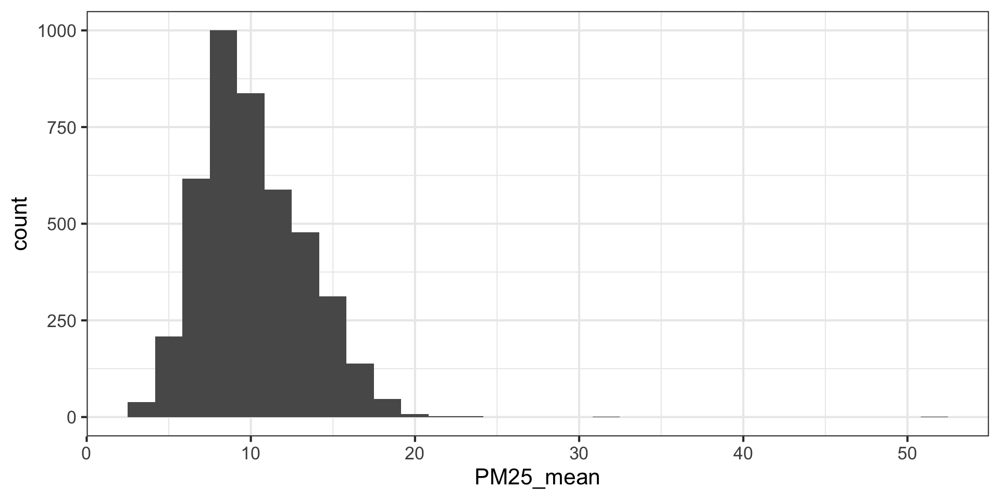
Air quality
It shows several statistical properties of the data related to variation:
The common values have the highest bars – values between roughly 6 and 14.
Values under 4 and over 18 are rare, accounting for under 5% of the data.
Values are concentrated between 4 and 18, but are spread from 2 to 52.
The shape is pretty symmetric but a little more spread out to the right (“right skew”).
Question refinement
New question: The national standard is 12 micrograms per cubic meter. Over 1,000 measurements exceeded this. Was it just a few cities, or more widespread?
Question refinement
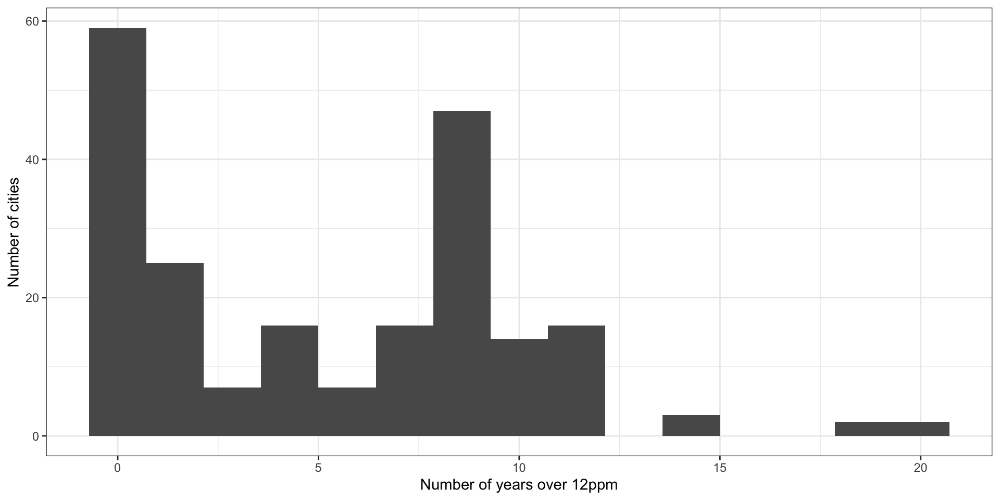
Question refinement
Many cities exceeded the standard at some point in time: over 70% of the cities in the dataset. So it was more widespread, but these were the worst:
# A tibble: 214 × 3
# Groups: City [211]
City State count
<chr> <chr> <int>
1 Hanford-Corcoran CA 20
2 Visalia-Porterville CA 20
3 Fresno CA 19
4 Bakersfield CA 18
5 Modesto CA 15
6 Stockton-Lodi CA 15
7 Merced CA 14
8 Canton-Massillon OH 12
9 Cincinnati OH-KY-IN 12
10 Evansville IN-KY 12
# ℹ 204 more rowsFurther questions
How many cities exceed the benchmark each year? Does this change from year to year?
There are a lot of years and it’s hard to see anything with all the overlapping bars.
- Generally avoid stacking histograms.
- Use density plots instead.
Further questions
Visually, it’s a lot easier to distinguish overlapping lines than overlapping bars. Smoothing out the histogram produces this:
This shows that both the variation in PM 2.5 and the typical values are diminishing over time.
- suggests fewer cities exceed the EPA standard (12 \(\mu g/m^3\)) over time
- a few outliers in some early year
- not the best presentation graphic, but useful exploratory graphic
Further questions
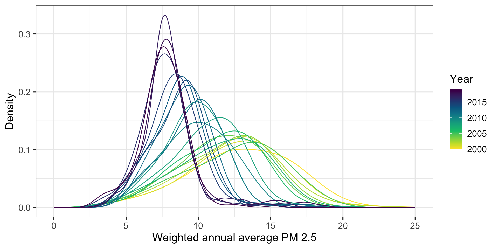
Further questions
This might get the message across better:
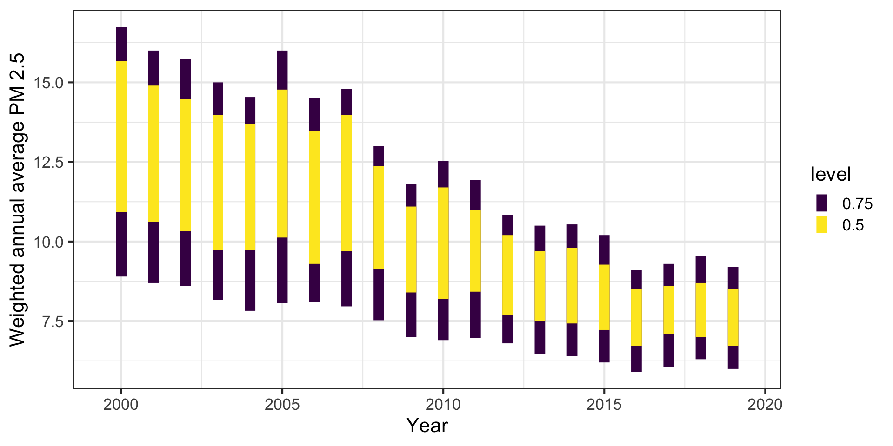
Further questions
This is also effective.
# First create the summarized data
plot_data <- pmdata %>%
filter(PM25_mean > 12) %>%
group_by(Year) %>%
summarise(`Number of Cities` = n()) %>%
ungroup()
# Create the plot with both points and lines
plot_data |> ggplot(aes(x = Year, y = `Number of Cities`)) +
geom_point() + geom_line(alpha = 0.4) +
labs(x = "Year", y = "Number of cities exceeding EPA standard") +
theme_bw(base_size=16)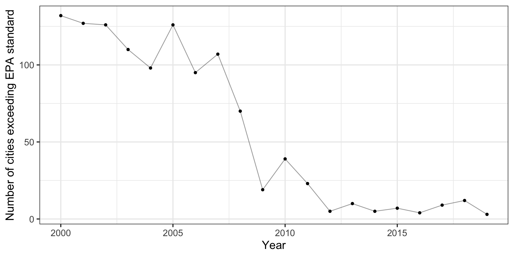
Density estimates
All of the above has amounted to exploration of the distribution of PM 2.5 values across years and cities.
Density estimates provide smooth approximations of distributions:
These are useful tools for answering questions about variation. Relative to the histogram:
- Easier to see the shape, spread, and typical values quickly.
- Easier to compare multiple distributions.
Density estimates
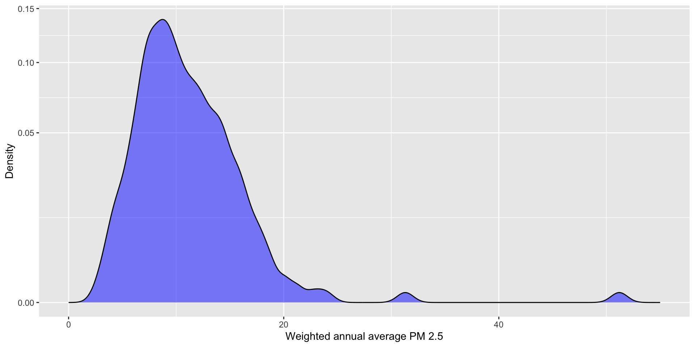
Histograms and probability densities
From 120A, a probability density/mass function, \(f(y)\), has two properties:
- Nonnegative: \(f(y) \geq 0\) for every \(y \in \mathbb{R}\).
- Sums/integrates to one: \(\int_\mathbb{R} f(y) dy = 1\) or \(\sum_{y \in \mathbb{R}} f(y) = 1\)
Histograms are almost proper density functions: they satisfy (1) but not (2).
A preliminary: indicator functions
In what follows we’re going to express the histogram mathematically as a function of data values.
This will require the use of indicator functions, which are simply functions that are 1 or 0 depending on a condition. They are denoted like this:
\[ \mathbf{1}\{\text{condition}\} = \begin{cases} 1 &\text{ if condition is true} \\ 0 &\text{ if condition is false} \end{cases} \]
The sum of an indicator gives a count of how many times the condition is met:
\[ \sum_i \mathbf{1}\{y_i > 0\} = \#\text{ of values that are positive} \]
Count scale histograms
When the bar height is a count of the number of observations in each bin, the histogram is on the count scale.
More precisely, if the values are \(y_1, \dots, y_n\), then the height of the bar for the \(j\)th bin \(B_j = (a_j, b_j]\) is: \[ \text{height}_j = \sum_{i = 1}^n \mathbf{1}\{y_i \in B_j\} \]
Count scale histograms
Bad for comparisons: the bar heights incomparable in scale whenever the bin widths and/or sample sizes differ.
library(ggplot2)
library(patchwork) # for combining plots
# Create first histogram with 15 bins
hist1 <- ggplot(pmdata, aes(x = PM25_mean)) +
geom_histogram(
bins = 15, alpha = 0.4,
fill = "orange", color = "black"
) + labs(x = "Weighted annual average PM 2.5", y = "count") +
theme_bw(base_size=16)
# Create second histogram with 50 bins
hist2 <- ggplot(pmdata, aes(x = PM25_mean)) +
geom_histogram(
bins = 50, alpha = 0.4,
fill = "blue",color = "black"
) + labs(x = "Weighted annual average PM 2.5", y = "count") +
theme_bw(base_size=16) + ylim(c(0, 1600))
# Combine the plots side by side
hist1 + hist2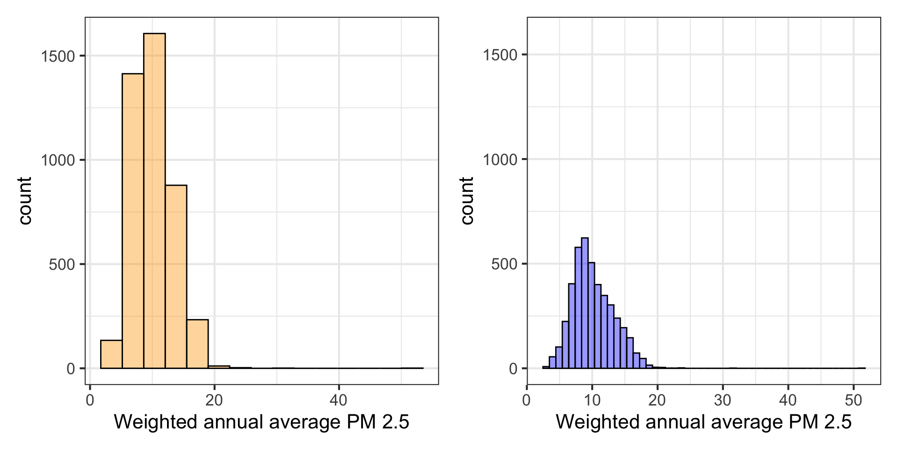
Density scale histograms
A fix that ensures comparability of scale for any two histograms is to normalize heights by bin width \(b\) and sample size \(n\).
\[ \text{height}_j = \color{red}{\frac{1}{nb}} \sum_{i = 1}^n \mathbf{1}\{y_i \in B_j\} \quad\text{where}\quad b = b_j - a_j \]
Now the area under the histogram is \(\sum_j b \times \text{height}_j = 1\), so we call this a density scale histogram, because it is a valid probability density.
Density scale histograms
library(ggplot2)
library(patchwork) # for combining plots
# Create first histogram with 15 bins
hist1 <- ggplot(pmdata, aes(x = PM25_mean)) +
geom_histogram(
aes(y = after_stat(density)), # scale to density
bins = 15, alpha = 0.4,
fill = "orange", color = "black"
) + labs(x = "Weighted annual average PM 2.5", y = "density") +
theme_bw(base_size=16)
# Create second histogram with 50 bins
hist2 <- ggplot(pmdata, aes(x = PM25_mean)) +
geom_histogram(
aes(y = after_stat(density)), # scale to density
bins = 50, alpha = 0.4,
fill = "blue",color = "black"
) + labs(x = "Weighted annual average PM 2.5", y = "density") +
theme_bw(base_size=16)
# Combine the plots side by side
hist1 + hist2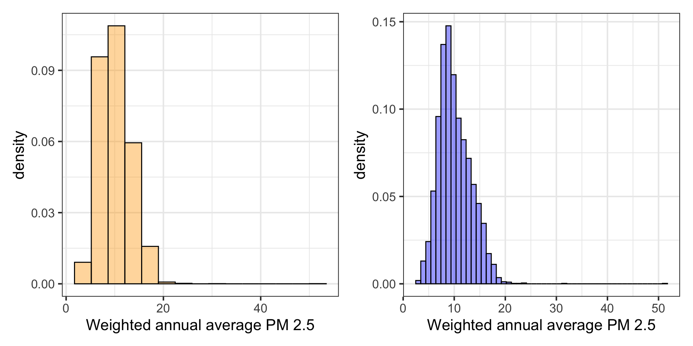
Why not just use a histogram?
A histogram makes you choose two things that are nowhere in the data:
- the bin width \(b\)
- where the bins start, the bin origin
Both choices change what the picture. To see this, take just the 2018 PM 2.5 values:
pm18 <- pmdata |> filter(Year == 2018) |> pull(PM25_mean)
# density-scale histogram bar heights for a given bin width and origin
hist_bars <- function(y, b, origin = 0) {
lo <- origin - b * ceiling((origin - min(y)) / b)
h <- hist(y, breaks = seq(lo, max(y) + b, by = b), plot = FALSE)
tibble(mid = h$mids, density = h$counts / (sum(h$counts) * b), bw = b)
}Shifting the bins changes the story
Same data, same bin width (\(b = 2.5\)), only the starting point of the bins moves:
b <- 2.5
shifts <- c(0, 0.25, 0.5, 0.75) * b
bars <- map_dfr(shifts, \(s) hist_bars(pm18, b, s) |>
mutate(origin = sprintf("bins start at %.2f", s)))
ggplot(bars, aes(x = mid, y = density)) +
geom_col(width = b, fill = "lightgray", color = "white") +
facet_wrap(~ origin, nrow = 1) +
coord_cartesian(xlim = c(0, 20)) +
labs(x = "PM 2.5 (2018)", y = "density") +
theme_bw(base_size = 13)- In the first panel the bulk is a broad plateau of two comparable bars
- In the last panel it is a single sharp spike
- The apparent peak density runs from 0.19 to 0.27 – a swing of nearly 40%
Nothing about the data changed. Only an arbitrary choice did.
Shifting the bins changes the story
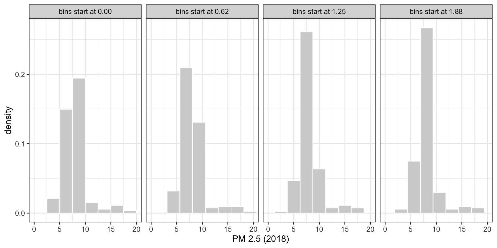
The bin width is arbitrary too
widths <- c(0.25, 1, 2.5, 8)
barsw <- map_dfr(widths, \(w) hist_bars(pm18, w)) |>
mutate(lab = factor(sprintf("bin width = %.2f", bw),
levels = sprintf("bin width = %.2f", widths)))
ggplot(barsw) +
geom_rect(aes(xmin = mid - bw/2, xmax = mid + bw/2, ymin = 0, ymax = density),
fill = "lightgray", color = "white") +
facet_wrap(~ lab, nrow = 1, scales = "free_y") +
coord_cartesian(xlim = c(0, 22)) +
labs(x = "PM 2.5 (2018)", y = "density") +
theme_bw(base_size = 13)- Too narrow: each bin holds a handful of cities, so sampling noise reads as real structure
- Too wide: the distribution is flattened into a few blocks and genuine features vanish
The bin width is arbitrary too
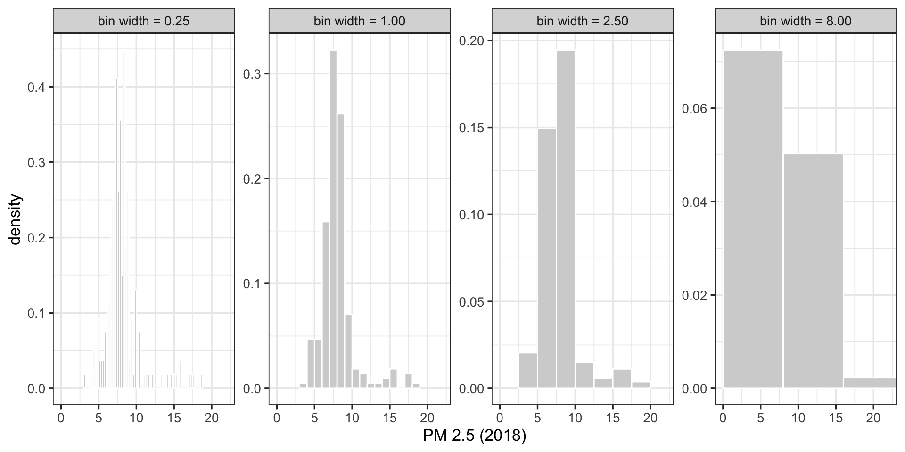
Other things histograms handle badly
They discard where a point falls inside its bin. Values of 7.01 and 8.99 are treated exactly like 7.99 and 8.01.
The estimate is a step function. Whatever we are estimating is usually smooth, so every jump is an artifact of the method rather than a feature of the data.
They stack badly. Comparing groups means overlapping bars that hide one another – which is exactly why we switched to density curves for the by-year comparison earlier.
KDE removes the bin origin
Overlaying a kernel density estimate on each of the four shifted histograms:
ggplot(bars, aes(x = mid, y = density)) +
geom_col(width = b, fill = "lightgray", color = "white") +
geom_density(data = tibble(x = pm18), aes(x = x), inherit.aes = FALSE,
color = "red", linewidth = 1) +
facet_wrap(~ origin, nrow = 1) +
coord_cartesian(xlim = c(0, 20), ylim = c(0, 0.32)) +
labs(x = "PM 2.5 (2018)", y = "density") +
theme_bw(base_size = 13)The red curve is identical in all four panels.
- There are no bins, so there is no origin to choose
- Every observation contributes a bump centered at its own value rather than at a bin
- Still need to choose a “bandwidth” (the analogue of bin width)
KDE removes the bin origin
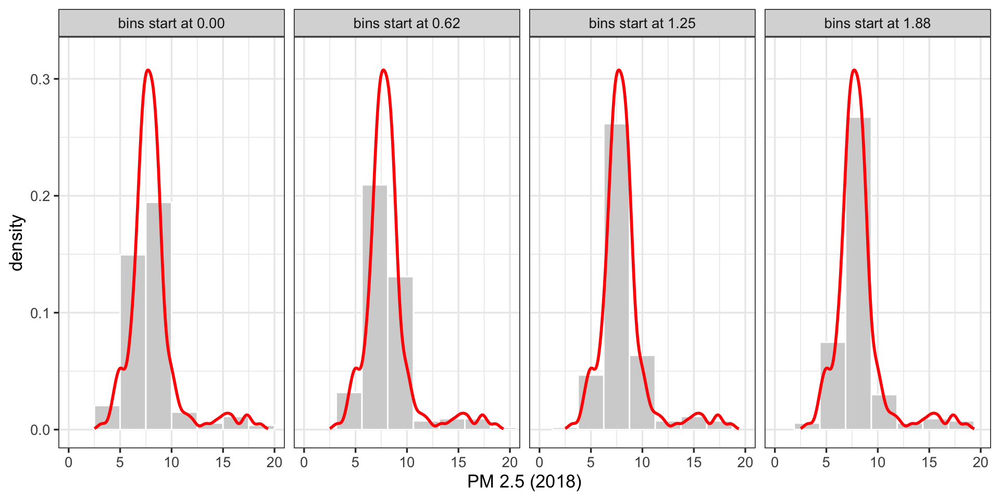
Smoothing
Kernel density estimates are local smoothings of the density scale histogram.
This can be seen by comparing the type of smooth curve we saw earlier with the density scale histogram.
library(ggplot2)
# Calculate bin width and total observations for density calculation
bin_width <- 2
n_obs <- nrow(pmdata)
# Create the combined plot
ggplot(pmdata, aes(x = PM25_mean)) +
geom_histogram(
aes(y = after_stat(density)),
binwidth = bin_width,
fill = "lightgray",
color = "white",
size = 0.1
) +
geom_density(
adjust = 4,
color = "black",
alpha = 0.5
) +
xlab("Average long-term PM 2.5") + ylab("Density") +
xlim(c(0, 55)) + ylim(c(0, 0.15)) +
scale_y_continuous(trans = "sqrt") +
theme_minimal() Smoothing
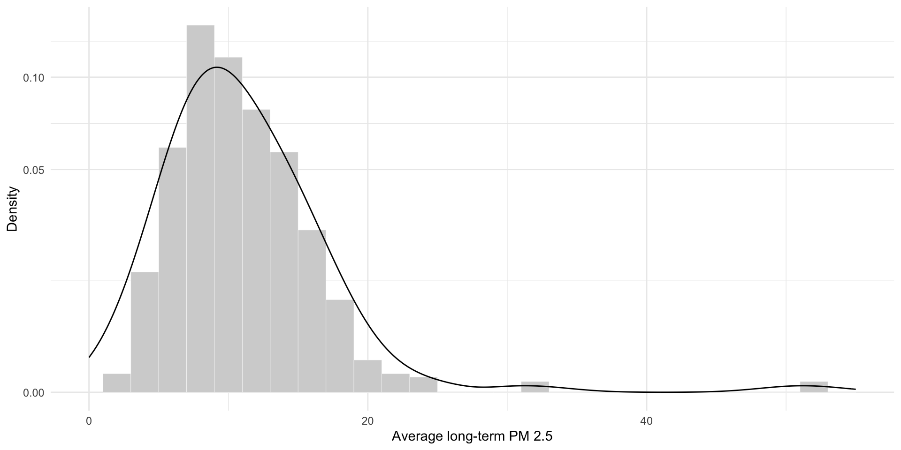
How KDE works
Technically, KDE is a convolution filtering. We can try to understand it in more intuitive terms by developing the idea constructively from the density histogram in two steps.
- Do locally adaptive binning
- Replace counting by weighted aggregation
A ‘local’ histogram
One could do a ‘moving window’ binning by allowing the height at \(\color{red}{x}\) to be a normalization of the count in a neighborhood of \(x\) of width \(b\) rather than in one of a fixed set of bins:
\[ \text{hist}_\text{local}(\color{red}{x}) = \frac{1}{nb} \sum_{i = 1}^n \mathbf{1}\left\{|x_i - \color{red}{x}| < \frac{b}{2}\right\} \]
Let’s call this a local histogram, because the height at any point \(\color{red}{x}\) is determined relative to the exact location of \(\color{red}{x}\).

Demo
\[ \text{hist}_\text{local}(\color{red}{x}) = \frac{1}{nb} \sum_{i = 1}^n \mathbf{1}\left\{|x_i - \color{red}{x}| < \frac{b}{2}\right\} \]
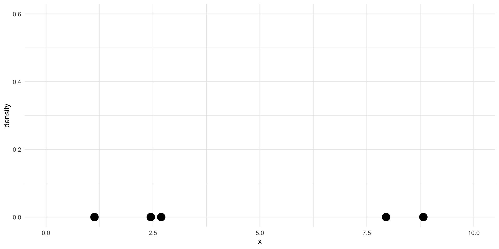
PM 2.5 data
Here’s what that would look like with \(b = 1\) for the air quality data:
# output-location: slide
# Create the grid and set bandwidth
grid <- seq(0, 50, length.out = 1000)
bw <- 1
# Calculate density values - vectorized calculation for efficiency in R
calculate_densities <- function(grid_points, data, bandwidth) {
clean_data <- data$PM25_mean[!is.na(data$PM25_mean)]
sapply(grid_points, function(g) {
sum(abs((g - clean_data)/(bandwidth/2)) < 1) / (bandwidth * 4280)
})
}
# Calculate densities
dens <- calculate_densities(grid, pmdata, bw)
# Create dataframe for plotting
curve <- data.frame(x = grid, y = dens)
# Create the plot with both area and line
ggplot(curve, aes(x = x, y = y)) +
# Add filled area
geom_area(alpha = 0.5, fill = "skyblue") +
# Add line on top
geom_step(size = 0.5, color = "black") +
theme_bw(base_size=16)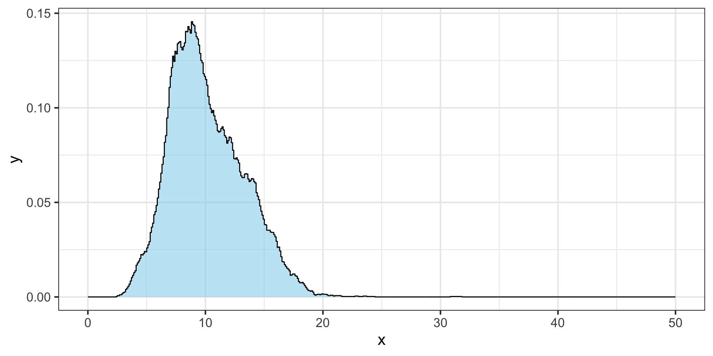
PM 2.5 data
Zooming in reveals that this is still a step function:
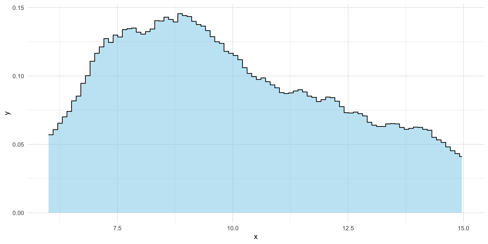
The kernel function
The local histogram is in fact a density estimate with a uniform ‘kernel’: \[ \text{hist}_\text{local}(\color{red}{x}) = \frac{1}{n} \sum_{i = 1}^n \underbrace{\frac{1}{b}\mathbf{1}\left\{|x_i - \color{red}{x}| < \frac{b}{2}\right\}}_\text{kernel function} \]
- uniform because the kernel function is constant about \(x\)
- when \(x_1, \dots, x_n\) are a random sample, this is an estimate of the population denisty
Gaussian KDE
Replacing the uniform kernel with a Gaussian kernel yields a smooth density estimate: \[ \hat{f}(\color{red}{x}) = \frac{1}{n} \sum_{i = 1}^n \frac{1}{b}\varphi\left(\frac{x_i - \color{red}{x}}{b}\right) \]
- \(\varphi\) is the standard Gaussian density \(\varphi(z) = \frac{1}{\sqrt{2\pi}}\exp\left\{- \frac{z^2}{2}\right\}\)
- \(b\) is the smoothing ‘bandwidth’
In effect, the KDE curve at any point \(\color{red}{x}\) is a weighted aggregation of all the data with weights proportional to their distance from \(\color{red}{x}\).
Smoothing bandwidth
The bandwidth parameter \(b\) controls how wiggly the KDE curve is.
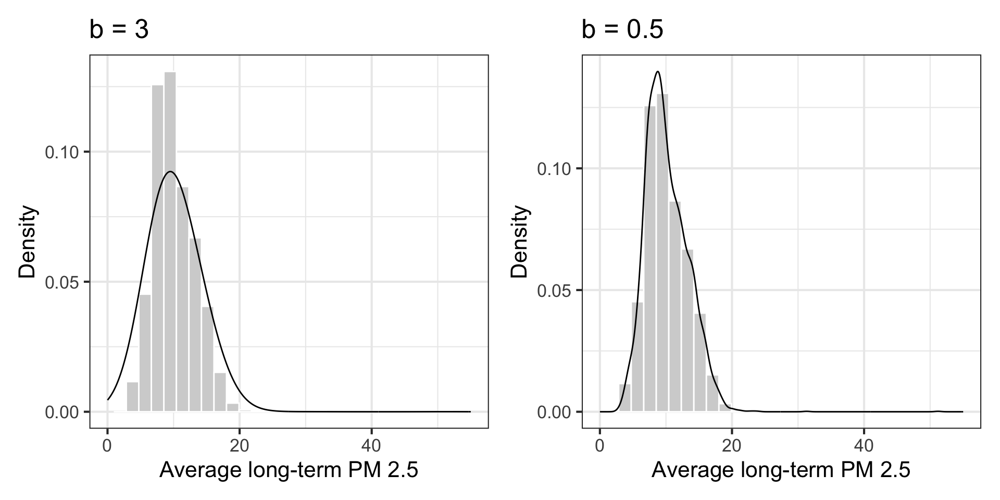
The choice of smoothing bandwidth can change the visual impression.
- too much smoothing can obscure outliers and multiple modes
- too little smoothing can misleadingly overemphasize sample artefacts
Other kernels
In general, a KDE can be computed with any appropriately normalized nonnegative kernel function \(K_b(\cdot)\).
\[ \hat{f}_{K_b}(\color{red}{x}) = \frac{1}{n} \sum_{i = 1}^n K_b\left(x_i - \color{red}{x}\right) \]
Other common kernel functions include:
- triangular kernel \(K(z) = 1 - |z|\)
- parabolic kernel \(K(z) \propto 1 - z^2\)
- cosine kernel \(K(z) \propto \cos\left(\frac{\pi z}{2}\right)\)
- circular density \(K(z) \propto \exp\left\{k\cos(z)\right\}\)
- any symmetric continuous probability density function
Sustainability data
We’ll work with sustainability index data for US cities to explore density estimation further.
# A tibble: 933 × 6
GEOID_MSA Name Econ_Domain Social_Domain Env_Domain Sustain_Index
<chr> <chr> <dbl> <dbl> <dbl> <dbl>
1 310M300US10100 Aberdeen, … 0.565 0.591 0.444 1.60
2 310M300US10140 Aberdeen, … 0.428 0.521 0.429 1.38
3 310M300US10180 Abilene, T… 0.481 0.497 0.454 1.43
4 310M300US10220 Ada, OK Mi… 0.467 0.526 0.426 1.42
5 310M300US10300 Adrian, MI… 0.498 0.602 0.282 1.38
6 310M300US10420 Akron, OH … 0.491 0.579 0.326 1.40
7 310M300US10460 Alamogordo… 0.399 0.535 0.416 1.35
8 310M300US10500 Albany, GA… 0.324 0.468 0.470 1.26
9 310M300US10540 Albany, OR… 0.461 0.589 0.401 1.45
10 310M300US10580 Albany-Sch… 0.566 0.568 0.412 1.55
# ℹ 923 more rows- 933 distinct cities
- indices for sustainability in enviornmental, social, and eonomic domains
Environmental sustainability index
Let’s use the environmental sustainability index (Env_Domain) initially. The distribution of environmental sustainability across cities is shown below.
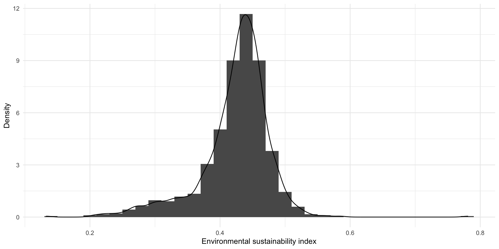
KDE bandwidth selection
A common choice for Gaussian KDE bandwidth is Scott’s rule:
\[ b = 1.06 \times \hat \sigma \times n^{-1/5} \]
n <- length(sust$Env_Domain)
h <- 1.06 * sd(sust$Env_Domain) * n^(-1/5)
# Assuming 'sust' is your dataframe and 'Env_Domain' is your column
ggplot(sust, aes(x = Env_Domain)) +
geom_histogram(aes(y = after_stat(density)),
alpha = 0.5,
bins = 30) +
geom_density(bw = h,
color = "black") +
labs(x = "Environmental sustainability index",
y = "Density") +
theme_bw(base_size=16)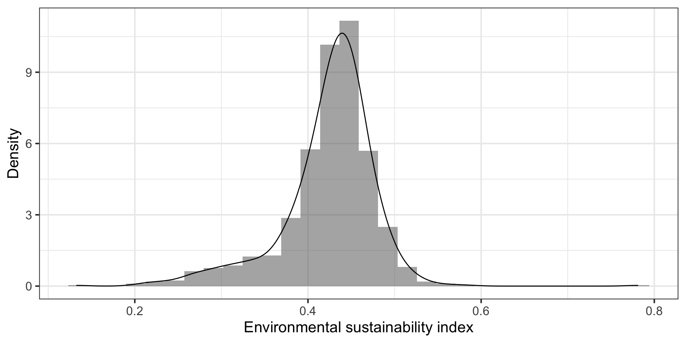
Other Kernels
geom_density plots a smooth density based on itself calling the density function in R.
set.seed(5309)
sigma_hat <- sd(sust$Env_Domain)
sust_sub <- sust |> sample_frac(0.05)
n <- nrow(sust_sub)
bw_scott <- 1.06 * sigma_hat * n^(-1/5)
# Assuming 'sust' is your dataframe and 'Env_Domain' is your column
plot_density <- function(kernel = "gaussian", bw=bw_scott) {
sust_sub |>
ggplot(aes(x = Env_Domain)) +
geom_histogram(aes(y = after_stat(density)),
alpha = 0.5,
bins = 30) +
geom_density(color = "black",
bw = bw,
kernel = kernel) +
labs(x = "",
y = "") +
theme_bw(base_size=16) + ggtitle(kernel)
}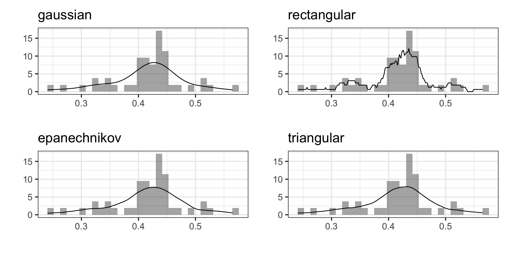
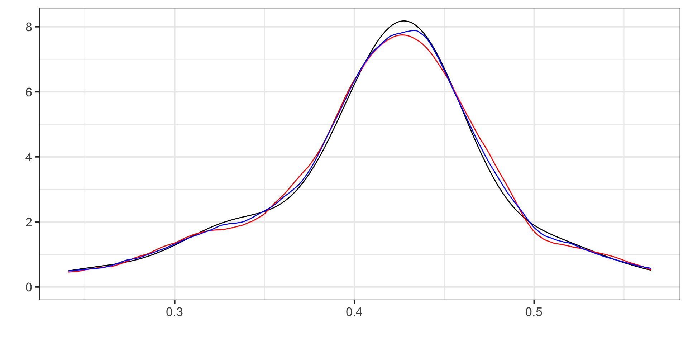
2D Histograms
Overplotting revisited
Now let’s estimate the joint distribution of environmental and economic sustainability indices. Here are the values:
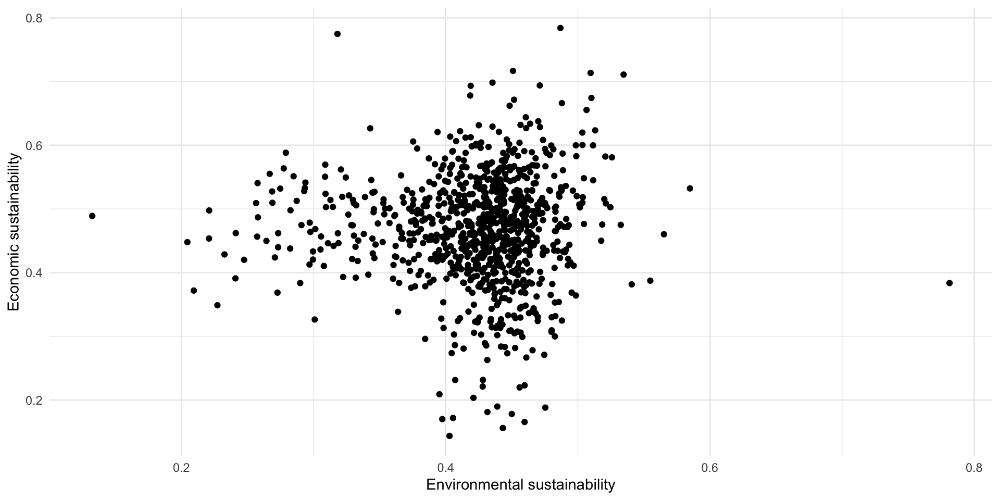
2D Histograms
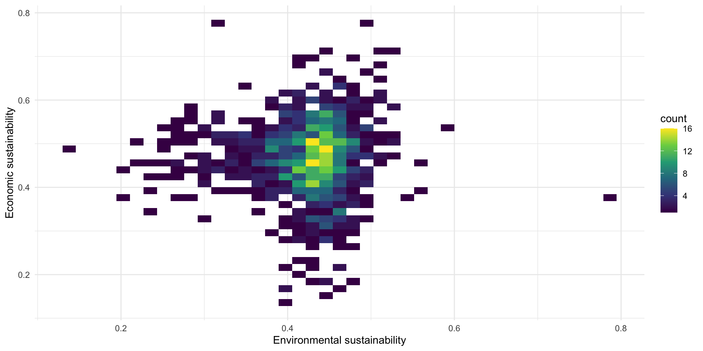
2D Histograms
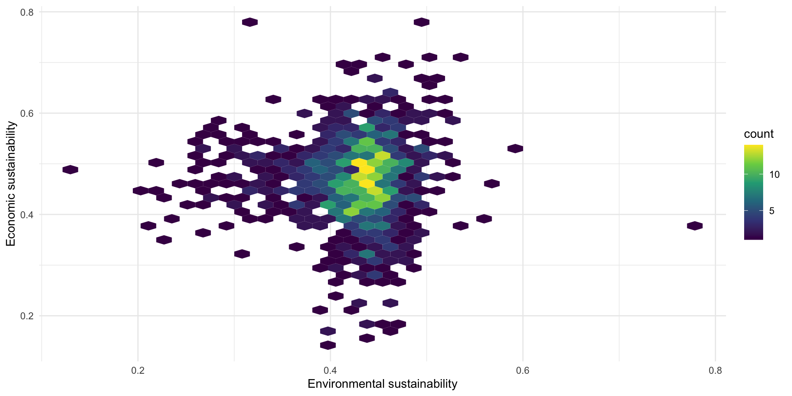
KDE in higher
KDE can be generalized to estimating joint densities in \(p\) dimensions:
\[ \hat{f}_K (\mathbf{x}) = \frac{1}{n} \sum_i |\mathbf{B}|^{-1/2} K \left(\mathbf{B^{-1/2}}(\mathbf{x} - \mathbf{x}_i)\right) \]
- \(\mathbf{x}\in\mathbb{R}^p\) is a \(p\)-dimensional vector
- \(K:\mathbb{R}^p \rightarrow \mathbb{R}\) is a nonnegative kernel function
- \(B\) is a \(p\times p\) matrix of bandwidth parameters
The usual approach is to decorrelate the variates and apply a product kernel \(K(\mathbf{z}) = K_1(z_1)K_2(z_2)\cdots K_p(z_p)\) with separate bandwidths for each dimension.
Bivariate example
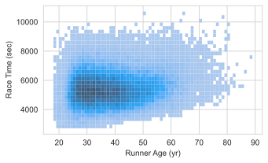
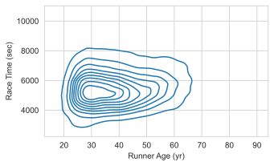
Does race time seem correlated with runner’s age?
Multivariate KDE
library(MASS)
#| output-location: slide
# Multivariate KDE
# Create prediction grid
x1 <- seq(min(sust$Env_Domain), max(sust$Env_Domain), length.out = 100)
x2 <- seq(min(sust$Econ_Domain), max(sust$Econ_Domain), length.out = 100)
grid <- expand.grid(env = x1, econ = x2)
# Compute 2D KDE
kde2d_result <- kde2d(sust$Env_Domain, sust$Econ_Domain, n = 100)
# Convert to data frame for plotting
kde_df <- expand.grid(x = kde2d_result$x, y = kde2d_result$y)
kde_df$z <- as.vector(kde2d_result$z)
# Plot 2D KDE
ggplot(kde_df, aes(x = x, y = y, fill = z)) +
geom_tile() +
scale_fill_viridis_c() +
theme_minimal() +
labs(x = "Environmental sustainability", y = "Economic sustadinability")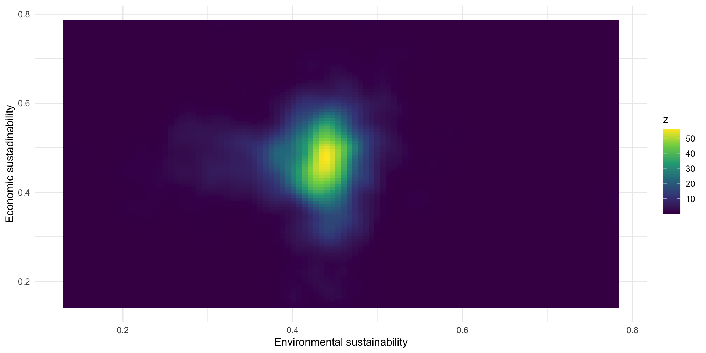
geom_density_2d
geom_density_2d calls kde2d and automates this process.
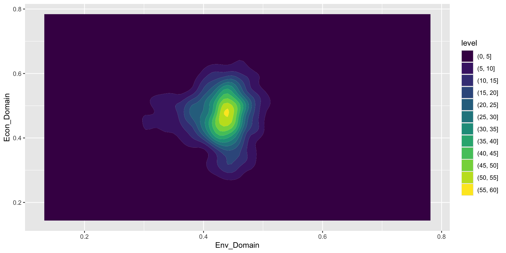
geom_density_2d
- Can use
adjustargument to reduces smoothness - Adjust sets the bandwidth relative to the default (scotts rule)
- Not, the
levelis proportional to the density but can’t easily be interpreted as probabilities!
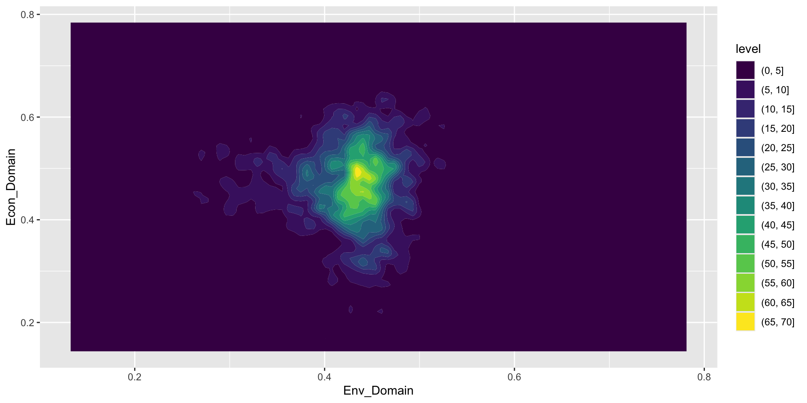
geom_hdr
The
ggdensitypackages has a geom calledgeom_hdralso useskde2d.I prefer this because it leads to direct probability interprations
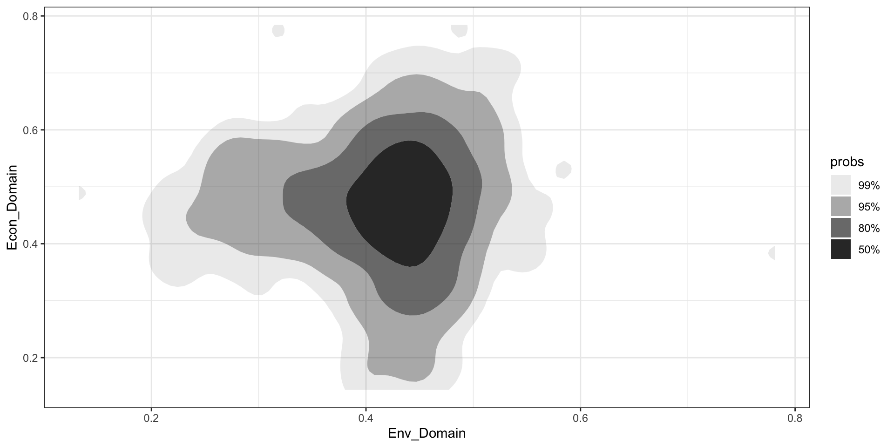
Sustainability data, revisited
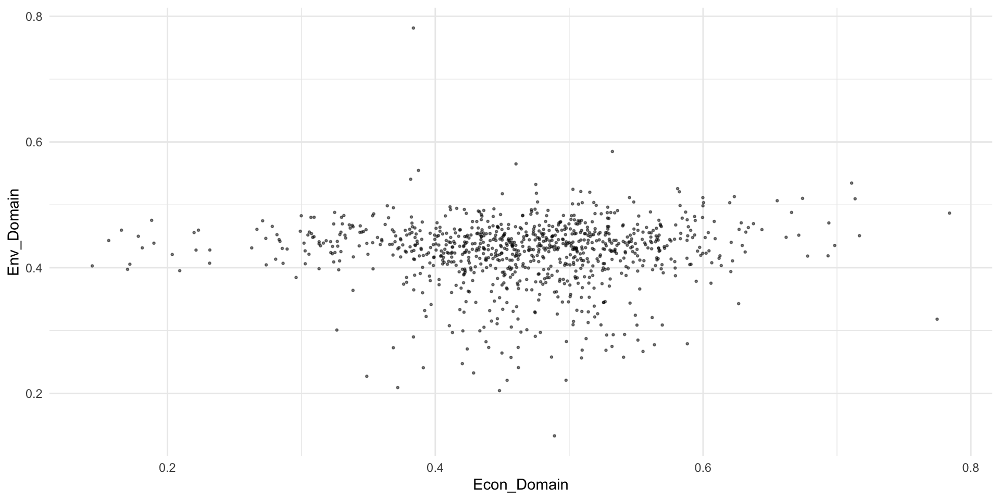
Kernel smoothing
Kernel smoothing is a technique similar to KDE used to visualize and estimate relationships (rather than distributions).
We’ll use the GDP and life expectancy data to illustrate.
# Life expectancy data
life <- read_csv('data/life-gdp.csv') |>
filter(Year == 2000) |>
dplyr::select(`Country Name`, All, `GDP per capita`) %>%
mutate(log_gdp = log(`GDP per capita`),
life_exp = All) %>%
dplyr::select(country = `Country Name`, log_gdp, life_exp)
# Kernel smoothing
ksmooth_fit <- ksmooth(life$log_gdp, life$life_exp,
kernel = "normal",
bandwidth = 1)
life |> ggplot() + geom_point(aes(x=log_gdp, y=life_exp)) +
geom_line(aes(x=x, y=y), data=as_tibble(ksmooth_fit), col="red", size=1.2) +
theme_bw(base_size=16)Kernel smoothing
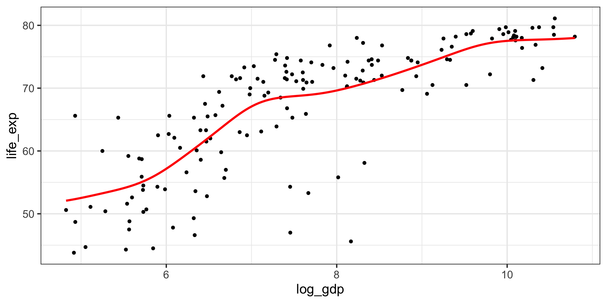
The method
The technique consists in estimating trend by local weighted averaging; a kernel function is used to determine the exact weights.
\[ \hat{y}(x) = \frac{\sum_i K_b (x_i - x) y_i}{\sum_i K_b(x_i - x)} \]
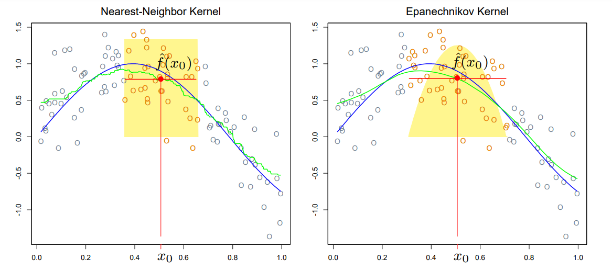
Notice that the kernel smooth trails off a bit near the boundary – this is because fewer points are being averaged once the smoothing window begins to extend beyond the range of the data.
Smoothing bandwidth
As with KDE, the bandwidth controls how wiggly the smooth is.
bandwidths <- c(0.25, 1, 4)
ks_bw <- purrr::map(bandwidths, \(b)
ksmooth(life$log_gdp, life$life_exp, kernel = "normal", bandwidth = b) |>
as_tibble() |>
mutate(bandwidth = factor(b))) |>
list_rbind()
life |> ggplot(aes(x = log_gdp, y = life_exp)) +
geom_point(alpha = 0.4) +
geom_line(aes(x = x, y = y, color = bandwidth), data = ks_bw, linewidth = 1.2) +
theme_bw(base_size = 16)- too little smoothing chases noise from individual countries
- too much smoothing flattens the trend and makes the boundary bias worse
ksmoothscales its kernels so their quartiles sit at \(\pm\)bandwidth/4; forkernel = "normal"the standard deviation is about \(0.37 \times\)bandwidth
Smoothing bandwidth
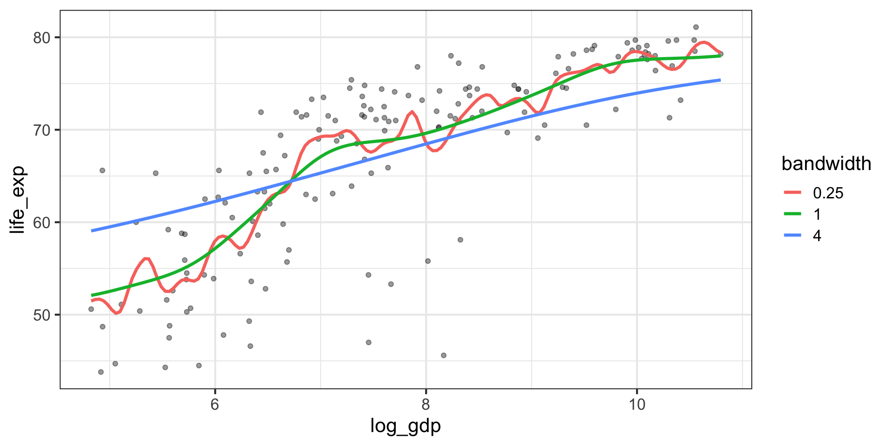
Choice of kernel
ksmooth offers two kernels: "box" (uniform) and "normal" (Gaussian).
ks_kernels <- purrr::map(c("box", "normal"), \(k)
ksmooth(life$log_gdp, life$life_exp, kernel = k, bandwidth = 1) |>
as_tibble() |>
mutate(kernel = k)) |>
list_rbind()
life |> ggplot(aes(x = log_gdp, y = life_exp)) +
geom_point(alpha = 0.4) +
geom_line(aes(x = x, y = y, color = kernel), data = ks_kernels, linewidth = 1.2) +
theme_bw(base_size = 16)As with KDE, the bandwidth matters much more than the kernel. The box kernel gives a slightly rougher curve because each point enters or leaves the window abruptly.
Choice of kernel
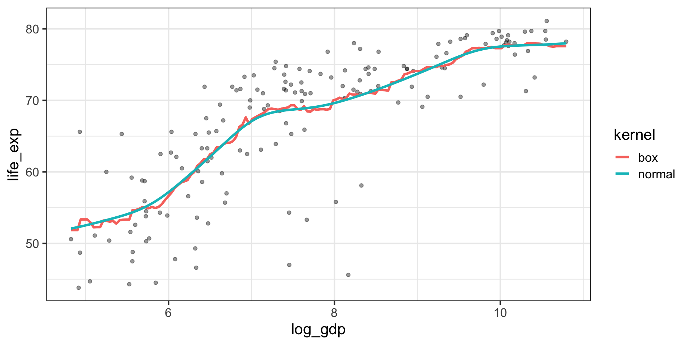
Kernel smoothing with geom_smooth
geom_smooth has no built-in kernel smoother, but its method argument accepts any function that returns a fitted model with a predict method. A short wrapper around ksmooth is enough:
ksmooth_method <- function(formula, data, kernel = "normal", bandwidth = 1, ...) {
structure(list(x = data$x, y = data$y, kernel = kernel, bandwidth = bandwidth),
class = "ksmooth_method")
}
predict.ksmooth_method <- function(object, newdata, ...) {
ksmooth(object$x, object$y, kernel = object$kernel,
bandwidth = object$bandwidth, x.points = newdata$x)$y
}Kernel smoothing with geom_smooth
Pass the wrapper as method, and the kernel and bandwidth through method.args:
This is the same curve we computed with ksmooth at the start of this section. Keep se = FALSE, since the wrapper doesn’t compute standard errors.
Gaps in the data
What happens when part of the range has no data? Here we drop the middle-income countries:
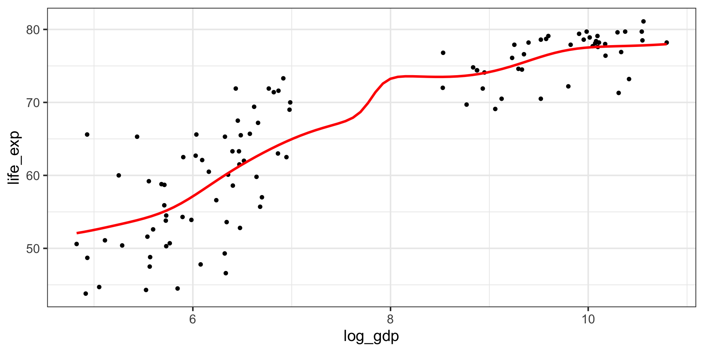
Inside the gap, the smooth is a weighted average of the nearest points on either side, so it draws a smooth curve where there are no observations at all.
Example: Wavy Turban’s at the beach
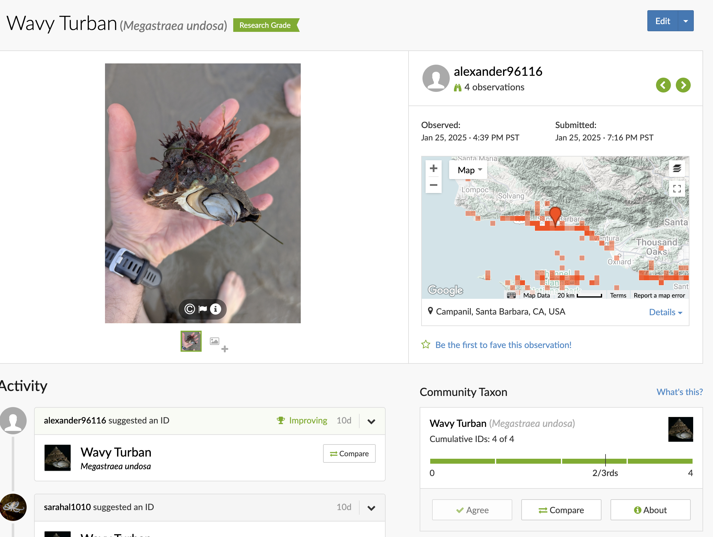
Example: Wavy Turban’s at the beach
# A tibble: 6,087 × 40
id uuid observed_on_string observed_on time_observed_at time_zone
<dbl> <chr> <chr> <date> <chr> <chr>
1 40528 ad7af75d-2… 2011-11-25 2011-11-25 <NA> Eastern …
2 55204 b0eb541a-f… 2011-01-27 2011-01-27 <NA> Pacific …
3 118803 46e7057f-e… 2012-09-02 2012-09-02 <NA> Pacific …
4 467617 4ebc72d5-4… 2009-04-19 11:40:… 2009-04-19 2009-04-19 18:4… Pacific …
5 509052 6d05b0f2-1… 2014-01-05 12:06:… 2014-01-05 2014-01-05 20:0… Pacific …
6 917505 36f03b50-6… 2014-10-07 18:41:… 2014-10-07 2014-10-08 01:4… Pacific …
7 1084601 2e063e32-5… 2014-11-20 2014-11-20 <NA> Pacific …
8 1095700 a7aba615-8… Tue Nov 25 2014 1… 2014-11-25 2014-11-26 00:5… Pacific …
9 1102962 8cc9e37c-a… 2014-11-25 5:10 PM 2014-11-25 2014-11-26 01:1… Pacific …
10 1116893 d6c97b28-d… Fri Dec 05 2014 1… 2014-12-05 2014-12-05 21:5… Pacific …
# ℹ 6,077 more rows
# ℹ 34 more variables: user_id <dbl>, user_login <chr>, user_name <chr>,
# created_at <chr>, updated_at <chr>, quality_grade <chr>, license <chr>,
# url <chr>, image_url <chr>, sound_url <lgl>, tag_list <chr>,
# description <chr>, num_identification_agreements <dbl>,
# num_identification_disagreements <dbl>, captive_cultivated <lgl>,
# oauth_application_id <dbl>, place_guess <chr>, latitude <dbl>, …Spatial Map of Wavy Turbans
library(maps)
california <- map_data("state") %>%
subset(region == "california")
ggplot() +
geom_polygon(data = california,
aes(x = long, y = lat, group = group),
fill = "white",
color = "black") +
geom_point(data = wt |> filter(longitude < -115 & longitude > -125,
latitude < 45 & latitude > 32.5,
observed_on >= "2015-01-01"),
aes(x = longitude, y = latitude),
col = "red",
size = 0.5,
alpha = 0.6,
bins=100) +
# Set the coordinate system
coord_map() +
# Customize the theme
theme_minimal() +
# Add labels
labs(title = "Wavy Turban Observations",
x = "Longitude",
y = "Latitude") +
coord_cartesian(ylim=c(32.5, 36))Spatial Map of Wavy Turbans
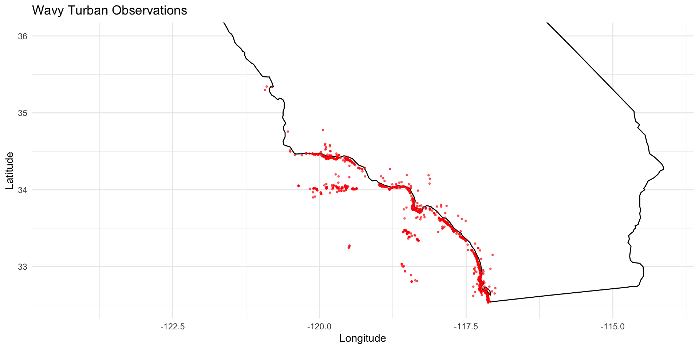
Counts by month and year
count_data <- wt |> mutate(date = ymd(observed_on),
month = month(date),
year = year(date)) |>
group_by(month, year) |>
summarize(count = n()) |>
mutate(date = ymd(paste(year, month, "1", sep="-"))) |>
arrange(date) |> filter(year > 2015)
print(count_data, n=10)# A tibble: 109 × 4
# Groups: month [12]
month year count date
<dbl> <dbl> <int> <date>
1 1 2016 7 2016-01-01
2 2 2016 6 2016-02-01
3 3 2016 4 2016-03-01
4 4 2016 5 2016-04-01
5 5 2016 11 2016-05-01
6 6 2016 17 2016-06-01
7 7 2016 3 2016-07-01
8 8 2016 3 2016-08-01
9 9 2016 8 2016-09-01
10 10 2016 3 2016-10-01
# ℹ 99 more rowsWavy Turban counts on iNaturalist
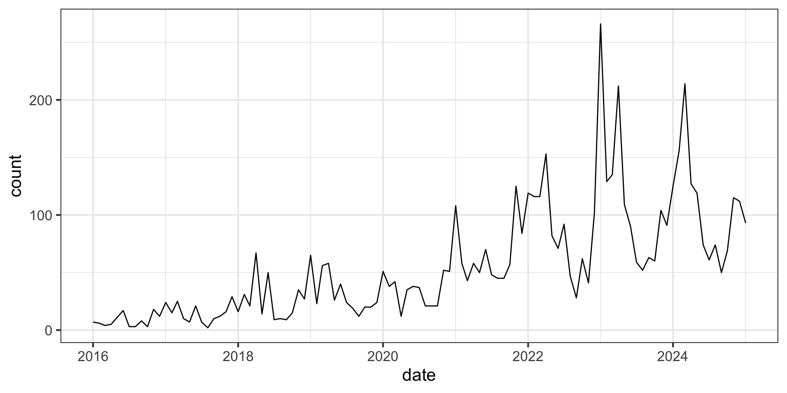
Smoothing Wavy Turban Counts
# dates are stored as days, so a bandwidth of 730 is about two years
predictions <- ksmooth(as.numeric(count_data$date), count_data$count,
kernel = "normal", bandwidth = 730,
x.points = as.numeric(count_data$date))$y
count_data$preds <- predictions
count_data |>
ggplot(aes(x=date, y=count)) +
geom_line() +
geom_line(aes(y=preds), col="red", size=1.2) + theme_bw(base_size=16) 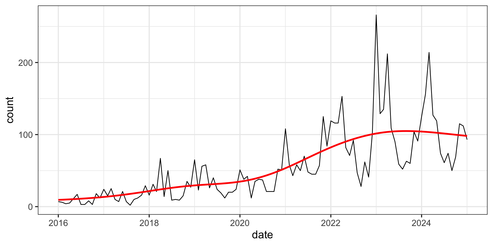
Residuals
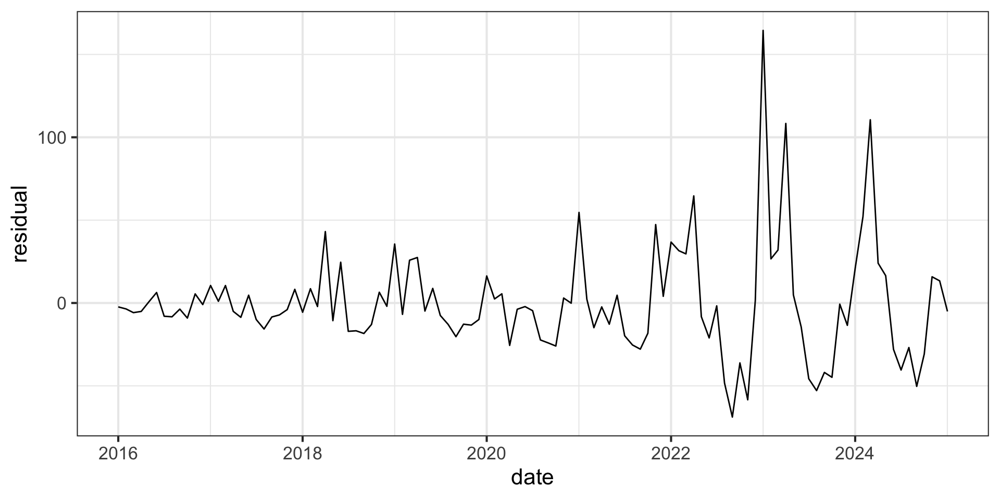
Percent Change
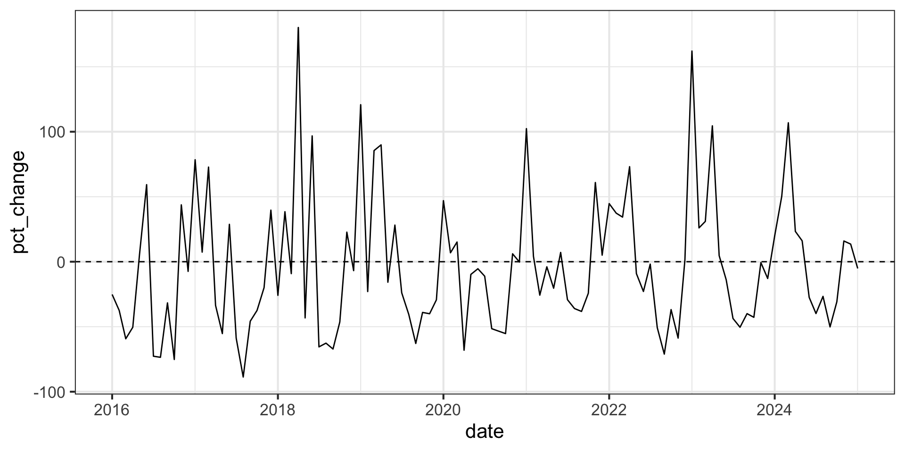
Median Percent Change by Month
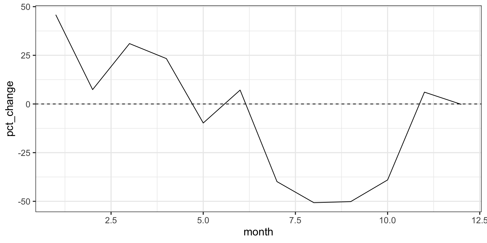
Percent Change by Month
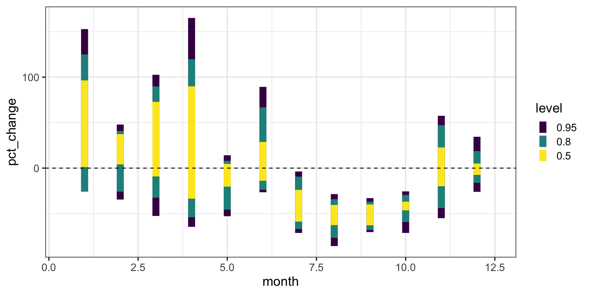
Median Percent Change by Month
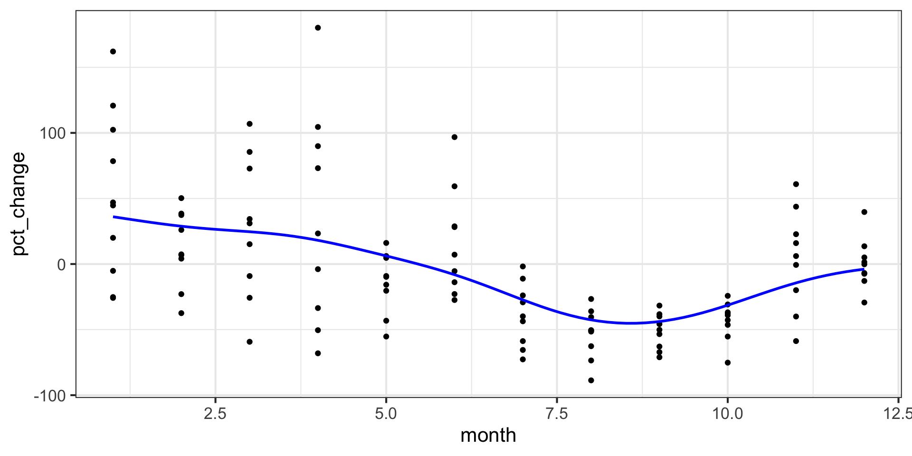
Median Percent Change by Month
Smooth again!
count_data |> ggplot(aes(x=month, y=pct_change)) +
geom_smooth(method = ksmooth_method, method.args = list(bandwidth = 3),
se = FALSE, col = "blue") + theme_bw(base_size=16) +
geom_point(aes(x=month, y=mean_pct_change), count_data |> group_by(month) |> summarize(mean_pct_change = mean(pct_change))) +
geom_hline(yintercept = 0, linetype="dashed")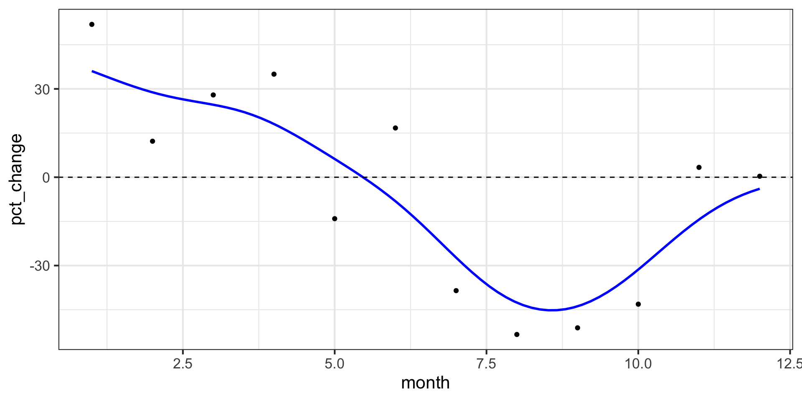